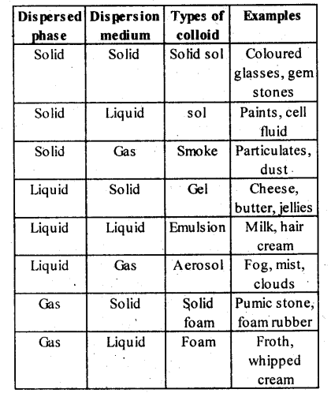

NCERT Solutions For Class 12 Chemistry Chapter 5 Surface Chemistry
Topics and Subtopics in NCERT Solutions for Class 12 Chemistry Chapter 5 Surface Chemistry:
| Section Name | Topic Name |
| 5 | Surface Chemistry |
| 5.1 | Adsorption |
| 5.2 | Catalysis |
| 5.3 | Colloids |
| 5.4 | Classification of Colloids |
| 5.5 | Emulsions |
| 5.6 | Colloids Around Us |
NCERT Solutions CBSE Sample Papers ChemistryClass 12 Chemistry
NCERT TEXTBOOK QUESTIONS SOLVED
5.1. Write any two characteristics of Chemisorption.
Ans: Pt and Pd form inert electrodes, i.e., they are not attacked by the ions of the electrolyte or the products of electrolysis. Hence, they are used as electrodes for carrying out electrolysis.
5.2. Why does physisorption decrease with the increase of temperature?
Ans: Physisorption is an exothermic process :
According to Le-Chatelier’s principle, if T is increased, equilibrium shifts in the backward direction i.e., gas is released from the surface of solid.
5.3. Why are powdered substances more effective as adsorbents than their crystalline forms?
Ans: The powdered form of the adsorbent has greater surface area as compared to the crystalline form. This will be therefore, more effective as adsorbent.
5.4. In Haber’s process, hydrogen is obtained by reacting methane with steam in presence of NiO as catalyst. The process is known as steam reforming. Why is it necessary to remove CO when ammonia is obtained by Haber’s process?
Ans: CO acts as a poison for the catalyst used in the manufacture of NH3 by Haber’s process. Hence, it is necessary to remove it.
5.5. Why is the ester-hydrolysis slow in the beginning and becomes faster after sometime?
Ans: The ester hydrolysis takes place as follows :
The acid produced in the reaction acts as an auto catalyst for the reaction. Hence, the reaction becomes faster after some time.
5.6. What is the role of desorption in the process of catalysis?
Ans: In the heterogeneous catalysis carried over metal surface, adsorbed reactant species combine to form the products. They have to be desorbed from the surface so that more the reactants may be accommodated on the surface of the catalyst. Therefore, desorption has a specific role to play in the process of catalysis.
5.7. What modification can you suggest in the Hardy Schulze, law?
Ans: According to Hardy Schulze law, the coagulating ion has charge opposite to that on the colloidal particles. Hence, the charge on colloidal particles is neutralized and coagulation occurs.
The modification to this law is :
When oppositely charged sols are mixed in proper proportions to neutralize the charges of each other, coagulation of both the sol occurs.
5.8. Why is it essential to wash a precipitate with water before estimating it quantitatively?
Ans: Precipitates are generally formed in the ionic reactions. Some ions of the reactants may be adsorbed or may stick on the surface of the particles of the precipitate. These can be removed by washing the precipitate repeatedly with water. In case these ions are not removed, they may introduce some error in weighing when the precipitate is estimated quantitatively.
NCERT EXERCISES
5.1. Distinguish between the meaning of the terms adsorption and absorption. Give one example of each.
Ans: This phenomenon of attracting and retaining the molecules of a substance by a solid (or a liquid) on its surface resulting into a higher concentration of the molecules on the surface is known as adsorption.
Absorption is different from adsorption. In absorption, the substance is uniformly distributed throughout the body of a solid or a liquid.
NH3 gets adsorbed on the charcoal where as NH3 when comes in contact with H20 gets absorbed by forming NH4OH solution of uniform concentration.
5.2. What is the difference between physical adsorption and chemisorption ?
Ans:
| Physisorption | Chemisorption |
| Weak van der Waals’ forces present. | Strong chemical bond forces present. |
| Low; of the order of 20-40 kJ/mol. | High; of the order of 80-240 kJ/mol. |
| Usually occurs at low temperature. | Occurs at high temperature. |
| Reversible. | Irreversible. |
| It is not specific in nature, i.e. all gases may be adsorbed on the surface of a solid. | It is highly specific in nature and occurs only when there is bond formation between adsorbent and adsorbate molecules. |
| Forms multi-molecular layers under high pressure. | Forms mono-molecular layer. |
| The extent of adsorption is directly related with the ease of liquefaction of the gas. | There is no correlation between extent of adsorption and the ease of liquefaction of the gas. |
| It does not involve appreciable activation energy. In most cases, the activation energy required is almost nil. | It generally requires appreciable activation energy since a chemical reaction is to take place. |
| Same state as in the bulk. | May be quite different from that in the bulk. |
5.3. Give reason why a finely divided substance is more effective as an adsorbent?
Solution: Finely divided substance has large surface area and hence greater adsorption.
5.4. What are the factors which influence the adsorption of a gas on a solid?
Solution: The adsorption of a gas on a solid surface is an example of physical adsorption. It is influenced by the following factors :
(i) Nature of the adsorbate
(ii) Nature of the adsorbent
(iii) Surface area of the adsorbent
(iv) Activation of the adsorbent
(v) Effect of pressure
(vi) Effect of temperature.
Factors affecting adsorption of a gas on solids are :
Nature of the adsorbate: The same gas is adsorbed to different extents by different solids at the same temperature. Also, greater the surface area of the adsorbent, more is the gas adsorbed.
Nature of the adsorbent: Different gases are adsorbed to different extents by different solids at the same temperature. Higher the critical temperature of the gas, greater is its amount adsorbed.
Surface area of the adsorbent: Surface area available for adsorption per gram of the adsorbent increases the extent of adsorption. Greater the surface area, higher would be the adsorption therefore, porous or powdered adsorbents are used.
Activation of adsorbent: It means increasing the adsorbing power of an adsorbent by increasing its surface area. It is done by :
- making the adsorbent’s surface rough
- removing gases already adsorbed
- subdividing the adsorbent into smaller pieces.
Pressure: At constant temperature, the adsorption of gas increases with pressure.
Temperature: Since adsorption is an exothermic process, applying Le Chatelier’s principle, we can find out that adsorption decreases with an increase in temperature.
5.5. What is an adsorption isotherm? Describe Freundlich adsorption isotherm.
Solution: Adsorption isotherm represents the variation of the mass of the gas adsorbed per gram of the adsorbent with pressure at constant temperature. Freundlich Adsorption isotherm:
Freundlich, in 1909, gave an empirical relationship between the quantity, of gas adsorbed by unit mass of solid adsorbent and pressure at a particular temperature. The relationship can be expressed by the following equation:
where x is the mass of the gas adsorbed by mass ‘m’ of the adsorbent at pressure P, k and n are constants which depend on the nature of the adsorbent and the gas at a particular temperature. The relationship is generally represented in the form of a curve where mass of the gas adsorbed per gram by the adsorbent is plotted against pressure. These curves indicate that at a fixed pressure, there is a decrease in physical adsorption with increase in temperature. These curves always seem to approach saturation at high pressure.
Taking log of equation (i), we get
5.6. What do you understand by activation of adsorbent ? How is it achieved?
Solution: Activation of adsorbent implies increasing its adsorbing power. This is achieved by increasing the surface area and also the number of pores and vacant sites (active centres) per unit area. The activation can be achieved in a number of ways.
5.7. What role does adsorption play in heterogeneous catalysis?
Solution: In heterogenous catalysis, generally the reactants are gaseous whereas catalyst is a solid. The reactant molecules are adsorbed on the surface of the solid catalyst by physical adsorption or chemisorption. As a result, the concentration of the reactant molecules on the surface increases further leading to increase in rate of reaction. Alternatively, one of the reactant molecules undergoes fragmentation on the surface of the solid catalyst producing active species which react faster. The product molecules in either case have no affinity for the solid catalyst and are deadsorbed making the surface free for fresh adsorption.
5.8. Why is adsorption always exothermic?
Solution: When a gas is adsorbed on the surface of a solid, its entropy decreases, i.e., ΔS is negative.
Now, ΔG = ΔH-TΔS For a process to be spontaneous, ΔG must be negative. As here, ΔS is negative, therefore, TΔS is positive ΔG can be negative only if ΔH is negative Hence, adsorption is always exothermic.
5.9. How are the colloidal solutions classified on the basis of physical states of the dispersed phase and dispersion medium?
Solution: Colloids can be classified into eight types depending upon the physical state of the dispersed phase and the dispersion medium.

5.10. Discuss the effect of pressure and temperature on the adsorption of gases on solids.
Solution: (i) Adsorption decreases with an increase in temperature since it is an exothermic process by applying Le Chatelier’s principle the reaction will proceed in backward direction with increase in temperature.
(ii) At a constant temperature, adsorption increases with pressure.
5.11. What are lyophilic and lyophobic sols ? Give one example in each case.
Solution:
Lyophilic colloids: The colloidal solution in which the particles of the dispersed phase have a great affinity (or love) for the dispersion medium, are called lyophilic colloids. Such solutions are easily formed the moment the dispersed phase and the dispersion medium come in direct contact. e.g., sols of gum, gelatin, starch, etc.
Lyophobic colloids: The colloidal solutions in which the particles of the dispersed phase have no affinity or love, rather have hatred for the dispersion medium, are called lyophobic colloids. The solutions of metals like Ag and Au, hydroxides like Al(OH)3 and Fe(OH)3 and metal sulphides like As2S3 are examples of lyophobic colloids.
5.12. What is the difference between multimolecular and macromolecular colloids? Give one example of each.
How a re associated colloids different from these two types of colloids?
Solution: Comparison of some important characteristic of multimolecular, macromolecular and associated colloids.

5.13. What are enzymes? Write in brief the mechanism of enzyme catalysis.
Solution: Enzymes are complex nitrogenous organic compounds which act as a biological catalysts and increase the rate of cellular processes. According to the lock and key model, like every lock has a specific key, similarly every enzyme acts as a specific substrate.
When the substrate fits the active site (lock) of the enzyme, the chemical change begins.But it has also been noticed that enzyme changes shape, when substrate lands at the active site. This induced-fit model of enzyme action pictures the substrate inducing the active site to adopt a perfect fit, rather than a rigid shaped lock and key. Therefore, the new model for enzyme action is called induced fit model.
5.14. How are colloids classified on the basis of
(i) physical states of components
(ii) nature of dispersed phase and
(iii) interaction between dispersed phase and dispersion medium?
Solution: (i) Colloids can be classified into eight types depending upon the physical state of the dispersed phase and the dispersion medium.
(ii) Depending upon the type of the particles of the dispersed phase, colloids are classified as : Multimolecular, macro- molecular and associated colloids
(a) Multimolecular colloids: The colloids
in which the colloidal particles consist of aggregates of atoms or small molecules are called multimolecular colloids .
For Example: gold sol, sulphur sol etc.
(b) Macromolecular colloids : The colloids in which large particles of colloidal range having high molecular masses are dissolved in a suitable liquid are called macromolecular colloids.
Example: proteins, starch and cellulose form macromolecular colloids.
(c) Associated colloids (Micelles): Those colloids which behave as normal strong electrolyte at low concentration but show colloidal properties at high concentration due to the formation of aggregated particles of colloidal dimension’s. Such substances are also referred to as associated colloids.
(iii) (a) Lyophillic colloids (solvent loving) are those substances that directly pass into the colloidal state when brought in contact with the solvent, e.g., proteins, starch, rubber, etc.
These sols are quite stable because of the strong attractive forces between the particles of dispersed phase and dispersion medium.
(b) Lyophobic colloids (solvent hating) are those substances that do not form the colloidal sol readily when mixed with the dispersion medium.
These sols are less stable than the lyophilic sols.
5.15. Explain what is observed when :
(i) a beam of light is passed through colloidal sol
(ii) an electrolyte NaCl is added to ferric hydroxide sol
(iii) electric current is passed through a colloidal sol ? (C.B.S.E. Delhi 2008, 2009; Outside Delhi, 2010, 2011)
Solution:
(i) The path of light as well as the colloidal particles become visible because of Tyndall effect. When a beam of light is passed through a true solution, no scattering of light takes place. When the same beam of light is passed through a colloidal solution, scattering of light takes place. The visibility of dust particles in a semi darkened room, when a beam of sunlight enters or when a beam of light is thrown from a projector, are familiar examples of this scattering.
(ii) The positively charged sol particles of ferric hydroxide get their charge neutralised by interacting with negative chloride ions (CF). As a result, they get coagulated.
(iii) The colloidal particles move towards the oppositely charged electrode and this phenomenon is called electrophoresis.
5.16. What are emulsions? What are their different types? Give example of each type.
Solution: Emulsions: It is a colloidal system in which both the dispersed phase and the dispersion medium are liquids, e.g., milk consists of small drop’s of liquid fat dispersed in water.
Types of emulsions:
(a) Oil-in-water type in which small droplets of an oil are dispersed in water, e.g., milk, cod-liver oil, etc.
(b) Water-in-oil type in which water droplets are dispersed in an oil medium, e.g., butter.
5.17. How do emulsifires stabilise emulsion? Name two emulsifiers.
Solution: The role of an emulsifier in stabilising an emulsion can be explained in two ways:
(a) It is believed that an emulsifier gets concentrated at the oil-water interface i.e., the surface at which oil and water come in contact with each other. It forms a protective coating around each drop of oil and thus, prevents the oil drop from coming in contact with one another. The oil drops remain suspended in water and are not coagulated.
(b) According to an another view, the role of the emulsifier is the sjame as that of lubricant in a machine. Just as a lubricant reduces the friction in the various parts of machine, an emulsifier also tries to reduce the interfacial tension between oil and water by suitable means. Thus, oil and water remain in company of each other and do not get separated. The commonly used emulsifying agents are soaps, detergents, lyophilic colloids, proteins, gums, gelatin, caesin, agar etc.
5.18. Action of soap is due to emulsification and micelle formation. Comment
Solution: Soap is sodium or potassium salt of a higher fatty acid and may be represented as RCOO–Na+ (e.g., sodium stearate CH3(CH2 )16 COO–Na+ which is a major component of many bar soaps). When dissolved in water, it dissociates into RCOO– and Na+ ions. The RCOO– ions, however, consist of two parts – a long hydrocarbon chain R (also called non-polar ‘tail’) which is hydrophobic (water repelling), and a polar group COO– (also called polar- ionic ‘head’), which is hydrophilic (water loving).
The RCOO– ions are, therefore, present on the surface with their COO– groups in water and the hydrocarbon chains R staying away from it and remain at the surface. But at critical micelle concentration, the anions are pulled into the bulk of the solution and aggregate to form a spherical shape with their hydrocarbon chains pointing towards the centre of the sphere with COO– part remaining outward on the surface of the sphere. An aggregate thus formed is known as ‘ionic micelle’.
The cleansing action of soap is due to the fact that soap molecules form micelle around the oil droplet in such a way that hydrophobic part of the stearate ions is in the oil droplet and hydrophilic part projects out of the grease droplet like the bristles. Since the polar groups can interact with water, the oil droplet surrounded by stearate ions is now pulled in Water and removed from the dirty surface. Thus soap helps in emulsification and washing away of oils and fats. The negatively charged sheath around the globules prevents them from coming together and forming aggregates.
(a) Grease on cloth
(b) Stearate ions (from soap) arranging around the grease droplets
(c) Micelle formed
5.19. Give four examples of heterogeneous catalysis.
Solution: In heterogeneous catalysis, the catalyst is present in a different phase than that of the reactants,e.g.,

5.20. What do you mean by activity and selectivity of catalysts?
Solution: Important features of solid catalyst:
(a) Activity: The activity of a catalyst is its ability to accelerate chemical reactions. It depends upon the strength of chemisorption to a large extent.
The catalytic activity of a metal for hydrogenation increases as we move from Group 5 metals to Group 11. The maximum activity is shown by metals of Groups 7, 8 and 9.
(b) Selectivity: The selectivity of a catalyst is its ability to direct a reaction to yield a particular product. It mean a substance which acts as a catalyst in one reaction may not act as a catalyst in other reaction e.g., we get different products when we use different catalysts in the reaction between H2 and CO.
Question 21.
Describe some features of catalysis by zeolites.
Solution:
(a) Zeolites are hydrated aluminosilicates which have a three dimensional network structure containing water molecules in their pores.
(b) The pores are made vacant by heating before catalysis.
(c) The reactions taking place in zeolites depend upon the size and shape of reactant and product molecules and also on the pores and cavities in them, e.g., ZSM-5 converts alcohols to hydrocarbons by dehydrating them.
Alcohols \(\underrightarrow { ZSM-5 }\) Hydrocarbons
Question 22.
What is shape selective catalysis?
Solution:
The catalytic reaction that depends upon the pore structure of the catalyst and the size of the reactant and product molecules is called shape-selective catalysis. Zeolites are good shape-selective catalysts because of their honeycomb-like structures. They are microporous aluminosilicates with three dimensional network of silicates in which some silicon atoms are replaced by aluminium atoms giving Al-O-Si framework. The reactions taking place in zeolites depend upon the size and shape of reactant and product molecules as well as upon the pores and cavities of the zeolites. They are found in nature as well as synthesised for catalytic selectivity.
Question 23.
Explain the following terms :
- Electrophoresis
- Coagulation
- Dialysis
- Tyndall effect
Solution:
(i) Electrophoresis : Refer answer number 15 (iii)
(ii) Coagulation or precipitation : The stability of the lyophobic sols is due to the presence of charge on colloidal particles. If somehow, the charge is removed, the particles will come nearer to each other to form aggregates (or coagulate) and settle down under the force of gravity. The process of settling down of colloidal particles is called coagulation.
(iii) Dialysis : It is the process of removing dissolved substances from a colloidal solution by means of diffusion through a suitable membrane. Since particles (ions or smaller molecules) in a true solution can pass through animal membrane (bladder) or parchment paper or cellophane sheet but not the colloidal particles, the membrane can be used for dialysis. The apparatus used for this purpose is called dialyser. A bag of suitable membrane containing the colloidal solution is suspended in a vessel through which fresh water is continuously flowing. The molecules and ions diffuse through membrane into the outer water and pure colloidal solution is left behind.
(iv) Tyndall effect : Refer answer number 15 (i)
Question 24.
Give four uses of emulsions.
Solution:
- Some of the medicines are effective as emulsions.
- Paints are emulsions which are used in our daily life.
- Soaps and detergents act as cleansing agents, action of which is based on emulsification.
- Photographic films are coated with emulsion of AgBr on its surface.
Question 25.
What are micelles? Give an example of a micelle system.
Solution:
Micelles are substances that behave as normal strong electrolytes at low concentration but at high concentrations behave as colloids due to formation of aggregates. They are also called associated colloids, e.g., soaps and detergents. They can form ions and may contain 100 or more molecules to form a micelle.
Question 26.
Explain the terms with suitable examples :
- Alcosol
- Aerosol
- Hydrosol
Solution:
(i) Alcosol : The sol in which alcohol is used as dispersion medium is called alcosol e.g., sol of cellulose nitrate in ethyl alcohol.
(ii) Aerosol : The sol in which dispersion medium is gas and dispersed phase is either solid or liquid, the colloidal system is called aerosol e.g., fog, insecticides, sprays, etc.
(iii) Hydrosol : The sol in which dispersion medium is water is called hydrosol e.g., starch sol.
Question 27.
Comment on the statement that colloid is not a substance but a state of substance.
Solution:
This statement is true because the same substance in one solvent may behave as a colloid while in the other as crystalloid. For example, sodium chloride behaves as crystalloid in water but as colloid in benzene solvent. This means that the colloid is not a substance. It depends upon the particle size of the dispersed phase which varies from 103 to 106 pm.
More Resources for CBSE Class 12: